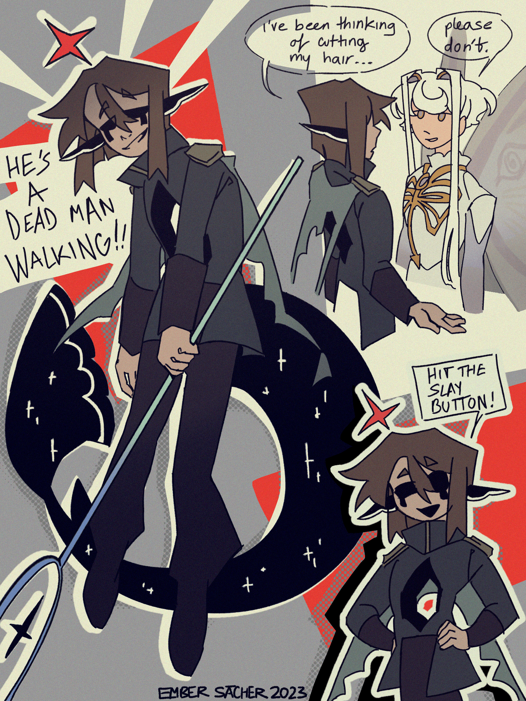

he's a dead man walking !!
creation date: june 30
characters featured: archer [& lyre in the top right corner]
ahh this one was an experimental page, i mostly wanted to focus on colors and overlays. overall im reaally happy w the comic-y collage-y effects here, but OUUUGHHHH... they looked the best at the bottom portion of the image when the TOP is the focal point, idk what happened with that 😭